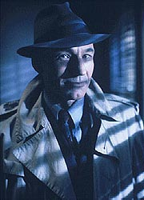
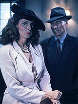
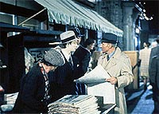
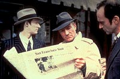
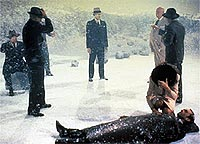

|
MANCHETE
DO EPISDIO
Aventura
do holodeck nos anos 40
uma das melhores da temporada
Episdio
anterior | Prximo
episdio
Sinopse:
Data Estelar: 41997.7.
 Picard
prepara-se para o primeiro contato da Federao com o povo Jarada
aps 20 anos. Ser um encontro difcil, pois o protocolo dos
Jaradas exige que eles sejam saudados em sua prpria lngua, sem
nenhum erro, antes que as negociaes diplomticas se iniciem.
Para relaxar, Picard vai ao holodeck e recria o mundo ficcional de
Dixon Hill, detetive dos anos 40. Mas o que era para ser apenas
entretenimento acaba por se transformar num jogo perigoso, quando o
real funde-se com o imaginrio e as balas de revlver tornam-se
verdadeiras.
Um grupo de gangsters atira em um tripulante e Picard, Data e a
doutora Crusher precisam negociar com os hologramas para garantir a
sobrevivncia at que a tripulao da Enterprise consiga
consertar o holodeck, o que ocorre em tempo para que o capito faa
o devido contato com os aliengenas.
Comentrios:
 "The
Big Goodbye" um episdio que certamente figura entre os
melhores do primeiro ano. O segredo do sucesso est na capacidade
de manter o foco da histria, a soberba produo que recriou no
holodeck todo o clima dos anos 40 e a qualidade do roteiro,
refletida em todos os personagens, tanto os regulares quanto os
criados especialmente para essa histria.
J conhecamos o holodeck desde "Encounter
at Farpoint", mas nunca realmente entramos em contato
com a incrvel capacidade desse equipamento em recriar situaes
e personagens. V-se claramente que ainda uma tecnologia
experimental, j que envolve riscos como o de fazer a tripulao
real sumir, ou ainda permitir que hologramas matem pessoas reais.
Mesmo assim, uma boa fonte para novas histrias.
 E
justamente o envolvimento das pessoas reais com os hologramas que
faz a magia dessa histria. Trata-se da primeira histria no
formato "holodeck", gnero que seria muitas vezes
reprisado em A Nova Gerao e nas sries posteriores. Hoje em dia
clich, mas na ocasio, foi novidade.
Aproveitamos para conhecer uma das paixes do capito Picard: as
histrias de detetives dos anos 40, encarnadas por Dixon Hill. O
ambiente fictcio hologrfico de Dix voltaria a aparecer no filme Primeiro
Contato.
Mas o mais interessante ver a textura dada aos personagens
criados pelo holodeck. Existe um conceito real, o chamado
"teste de Turing", utilizado para avaliar se uma entidade
dotada de inteligncia artificial pode ser considerada uma forma de
vida. O teste consiste em deixar que uma mquina interaja com um
ser humano, sem contato visual. Se a mquina conseguir convencer o
ser humano, por meio de seu comportamento, de que ela no uma mquina,
ela deve ser considerada uma forma de vida.
 Logo
se v que Turing consideraria facilmente aquele punhado de
hologramas como formas de vida. No s ele, como o prprio capito
Picard. Ao final do episdio h uma cena tocante, quando o capito,
ou melhor, Dixon Hill despede-se de seu colega policial. O holograma
pergunta a Picard se aquele mundo deixar de existir assim que ele
sair. O capito responde emblematicamente: "Sinceramente, eu no
sei".
Quando uma histria boa, os personagens so claramente
beneficiados por ela. Esse efeito visto nitidamente em "The
Big Goodbye", onde at os personagens principais, que
penaram na primeira temporada com suas pssimas caracterizaes,
saem ganhando.
O subtexto entre Beverly Crusher e o capito Picard --feito na
forma de sutis trocas de olhares-- d muita textura ao
relacionamento dos dois. Data tambm tem seus momentos de glria,
ao encarnar um "bronzeado" sul-americano.
A histria funciona to bem que nem chega a incomodar o fato de
que a segunda metade do episdio se passa praticamente toda em um
nico ambiente, o gabinete de Dixon Hill.
 Para
quem ficou do lado de fora do holodeck, as coisas no foram to
bem. Wesley continua mais espertalho e insuportvel do que nunca,
LaForge, Riker e Troi fazem muito pouco e Tasha Yar e Worf so
meros figurantes. Mas isso no fez mal ao episdio. Muito ao contrrio,
permitiu que o roteiro "investisse" mais em trs
personagens, dando-lhes um destaque raras vezes obtido no primeiro
ano da srie.
Citaes:
Picard - "If I
leave town, the town leaves with me."
("Se eu saio da cidade, a cidade sai comigo.")
Picard - "Mister LaForge... step on it."
("Sr. LaForge... pisa fundo.")
Trivia:
 Tracy Torm, o autor desse episdio, tambm conhecido como o
criador da srie "Sliders".
Tracy Torm, o autor desse episdio, tambm conhecido como o
criador da srie "Sliders".
"The
Big Goodbye" disputou dois prmios Emmy. Ganhou na
categoria de melhor figurino, mas perdeu a categoria de melhor
fotografia.
Ficha
tcnica:
Escrito por Tracy Torm
Direo de Joseph L. Scanlan
Exibido em 11/01/1988
Produo: 013
Elenco:
Patrick Stewart como
Jean-Luc Picard
Jonathan Frakes como William Thomas Riker
Brent Spiner como Data
LeVar Burton como Geordi La Forge
Michael Dorn como Worf
Gates McFadden como Beverly Crusher
Marina Sirtis como Deanna Troi
Wil Wheaton como Wesley Crusher
Denise Crosby como Natasha "Tasha" Yar
Elenco convidado:
Lawrence Tierney
como Cyrus Redlock
Harvey Jason como Felix Sanguessuga
William Boyett como tenente Dan Bell
David Selburg como Whalen
Gary Armagnac como tenente McNary
Mike Genovese como sargento
Dick Miller como vendedor
Carolyn Allport como Jessica Bradley
Rhonda Aldrich como secretria
Erik Cord como criminoso
Episdio
anterior | Prximo
episdio
|